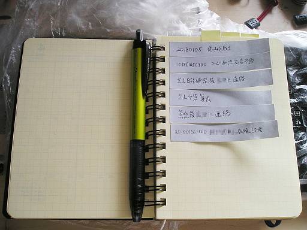
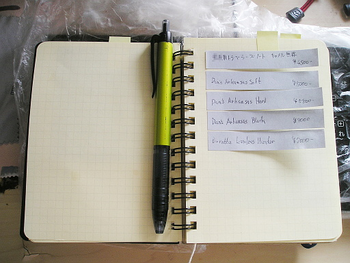
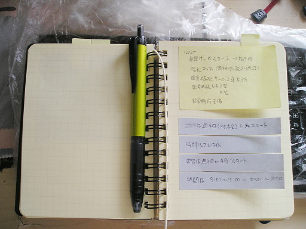
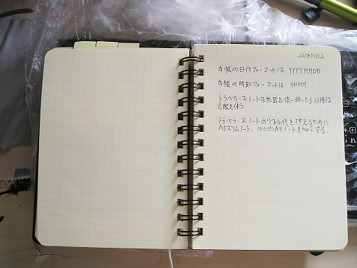
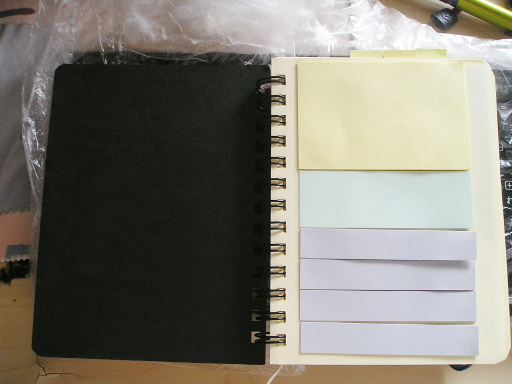
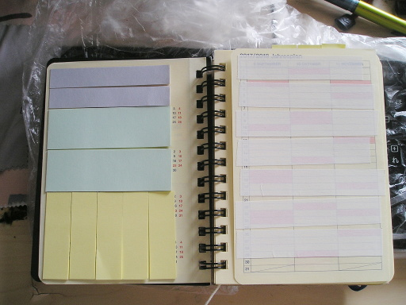

社会人は日常的にメモをとる。筆者も例外ではない。今日は筆者のメモの管理方法を紹介してみようと思う。
どのようなことをメモしているのかというと次のようなことだ。
これらのうち "To Do リスト"、"買い物リスト"、"仕事に関するメモのうち賞味期限が短いもの" は付箋で管理している。タスクが終了したり、買い物が終わったり、仕事が終わってメモが不要になったら、剥がして捨てる。
以前はメモ帳のページを破いて捨てていたがコストパフォーマンス的にあまりよろしくないので、付箋を導入した。高価なメモ帳を使うようになったことも理由の１つだ。
下の写真のように手帳のページ 1 枚を To Do リスト用に使っている。タスクが終了すると付箋を引っぺがして捨てるのだけど、それが精神的に気持ちいい。一種カタルシスを感じる。
終わったタスクの付箋をすてるということは、To Do リストとしては記録に残らないことになる。To Do リストを記録として残したい人は今流行りのバレット・ジャーナルのような記載方法を導入したほうがいいかもしれない。
次のページは買い物リストだ。下の写真のようにやはりメモ帳 1 枚分を割り当てている。
次に仕事に関するメモのうち賞味期限が短いものだけど、やはりこれも付箋で管理する。メモ帳には 1 枚分を割り当てている。現状では情報の賞味期限が短いので 1 枚で足りている。
ここには仕事に必要なメモだけでなく、あらかじめ用意した打ち合わせでの質問事項や要求事項などもまとめている。
次は仕事に関するメモのうち賞味期限が長いものと、その他雑多なメモだ。これらは普通にメモ帳にメモしている。
メモはページの片側だけ使う。なぜそうするのかというとメモをホルダーやトラベラーズ・ノートにファイリングできるようにするためだ。メモ帳にはロルバーンを使っているが、ロルバーンには切り離し用のミシン目が入っている。ミシン目で切り離してホルダーにファイリングしたり、トラベラーズ・ノートのリフィルに貼り付けたりするわけだ。
とはいえアーカイブの必要性を感じない情報もある。その場合はメモ帳がもったいないのでページは両面使う。でも大抵は片面しか使わないことがほとんどだ。
また、最近マスキングテープを導入した。マスキングテープは将来不要になるかも知れず、かといって必要なままかも知れず、判断に躊躇する情報を書き込むのに使用する。不要になれば剥がして破棄し、必要なままなら情報を書き込んだテープを剥がして他のページに貼り付けたりして編集したりする。新規の導入なのでどれくらい役立つかはまだ未知数だ。
それで下の写真のように必要な付箋は最初のページにあらかじめ貼り付けておく。ここがこのメモ帳で使う付箋の供給源となる。付箋を事務用品入れに入れておいて、メモをとるときにいちいち取り出すのはめんどくさい。
メモ帳の最初の 2 ページには付箋だけでなくマスキングテープもあらかじめ張っておく。これもメモ用のマスキングテープの供給源となる。
あと写真に白い紐が映っているが、これは栞用のタコ糸だ。単純にリングに結びつけてある。もうちょっとおしゃれな紐だといいのだけど、手元にタコ糸しかなかったのでそれをくくりつけている。